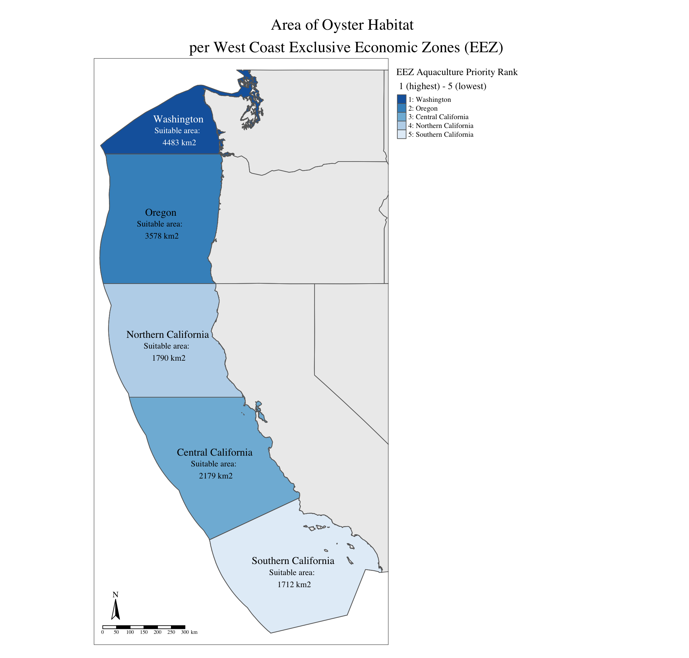
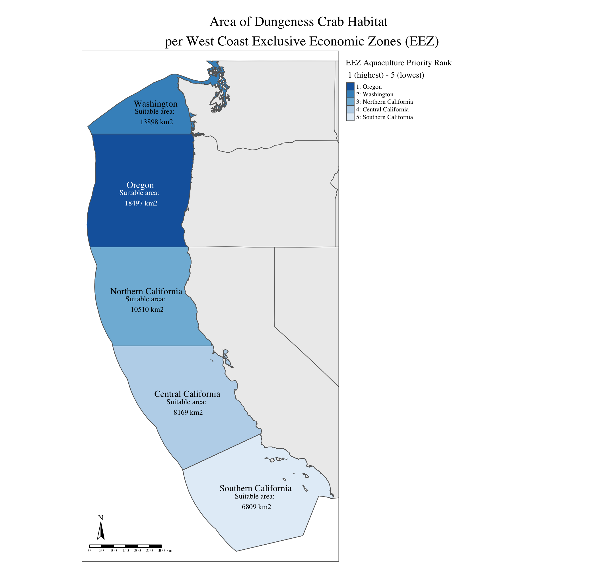

Show the code for loading libraries
rm(list = ls()) # Clear working environment
# Load libraries ----
library(sf)
library(terra)
library(tidyverse)
library(tmap)
library(here)
library(testthat)
library(spData) # For US States basemapFor this project, I determine which Exclusive Economic Zones (EEZ) on the West Coast of the US are best suited to developing marine aquaculture for several species of oysters and Dungeness crabs.
Marine aquaculture has the potential to play an important role in the global food supply as a more sustainable protein option than land-based meat production (Hall et al. 2011). Gentry et al. mapped the potential for marine aquaculture globally based on multiple constraints, including ship traffic, dissolved oxygen, and bottom depth. They found that global seafood demand could be met using less than 0.015% of the global ocean area (Gentry et al. 2017).
Suitable locations are determined based on range of suitable sea surface temperature (SST) and depth values for each species. Suitable growing conditions are found on SeaLifeBase. Conditions for my species of interest are:
sea surface temperature: 11-30°C
depth: 0-70 meters below sea level
sea surface temperature: 3-19°C
depth: 0-360 meters below sea level
I use average annual sea surface temperature (SST) from the years 2008 to 2012 to characterize the average sea surface temperature within the west coast regions. The data was originally generated from NOAA’s 5km Daily Global Satellite Sea Surface Temperature Anomaly v3.1.
Data files:
average_annual_sst_2008.tifaverage_annual_sst_2009.tifaverage_annual_sst_2010.tifaverage_annual_sst_2011.tifaverage_annual_sst_2012.tifTo characterize the depth of the ocean, I use the General Bathymetric Chart of the Oceans (GEBCO).
Data file: depth.tif
I designate maritime boundaries using Exclusive Economic Zones off of the west coast of US from Marineregions.org.
Data file: wc_regions_clean.shp
To start, I set up my analysis by loading all necessary libraries and data files.
rm(list = ls()) # Clear working environment
# Load libraries ----
library(sf)
library(terra)
library(tidyverse)
library(tmap)
library(here)
library(testthat)
library(spData) # For US States basemap# Read in data ----
# Sea surface temp
sst_2008 <- rast(here("data", "average_annual_sst_2008.tif"))
sst_2009 <- rast(here("data", "average_annual_sst_2009.tif"))
sst_2010 <- rast(here("data", "average_annual_sst_2010.tif"))
sst_2011 <- rast(here("data", "average_annual_sst_2011.tif"))
sst_2012 <- rast(here("data", "average_annual_sst_2012.tif"))
# Bathymetry
depth <- rast(here("data", "depth.tif"))
# Exclusive economic zones for maritime boundaries
wc_regions <- read_sf(here("data", "wc_regions_clean.shp"))Next, I combine all sea surface temperature rasters into one raster stack and match the coordinate reference systems of all files. For this analysis, I use EPSG:4326.
# Combine SST rasters into a stack ----
sst_all <- c(sst_2008,
sst_2009,
sst_2010,
sst_2011,
sst_2012)
# Match CRSs ----
# Regions
wc_regions <- st_transform(wc_regions, crs = "EPSG:4326")
# Depth
depth <- depth |>
project("EPSG:4326")
# SST
sst_all <- sst_all|>
project("EPSG:4326")
# Check that CRS match
test_that("All CRSs match",
{expect_true(st_crs(wc_regions) == st_crs(depth) & st_crs(wc_regions) == st_crs(sst_all))
})Now, I can process the SST and depth data so that they can be combined. To do this, I create a single raster containing mean SST in Celsius. Then, I match the extent and the resolution of the SST and depth rasters.
# Create raster with mean SST from 2008-2012 ----
sst_mean <- mean(sst_all, na.rm = TRUE) # Remove NA values
# Convert mean SST from Kelvin to Celsius ----
sst_mean <- sst_mean - 273.15
# Crop depth to match the extent of mean SST ----
ext(depth) <- ext(sst_mean)
# Resample depth data to match the resolution of the SST data using the nearest neighbor approach ----
depth <- resample(depth, sst_mean, method = "near")
# Stack depth and mean SST to check that resolution, extent, and CRS match
c(sst_mean,
depth)Ultimately, I want to create a function that has the following characteristics:
Before I create the generalized function, I create a workflow for a single species.
The first step is to find locations that are suitable in terms of both SST and depth by reclassifying SST and depth data into locations that are suitable for oysters (assigning 1 to suitable values and 0 to unsuitable) and multiplying the two reclassified rasters together, resulting in a new raster containing a 1 only in cells that are suitable for oyster growth.
# Reclassify SST and depth into locations that are suitable for oysters ----
# Create reclassification matrix - sst oysters
rcl_sst_oysters <- matrix(c(-Inf, 11, 0, # unsuitable
11, 30, 1, # suitable
30, Inf, 0), # unsuitable
ncol = 3, byrow = TRUE)
# Reclassify SST
sst_oysters <- classify(sst_mean, rcl = rcl_sst_oysters)
plot(sst_oysters)
# Create reclassification matrix - depth oysters
rcl_depth_oysters <- matrix(c(-Inf, -70, 0, # unsuitable
-70, 0, 1, # suitable
0, Inf, 0), # unsuitable
ncol = 3, byrow = TRUE)
# Reclassify depth
depth_oysters <- classify(depth, rcl = rcl_depth_oysters)
plot(depth_oysters)
# Find locations that satisfy both SST and depth conditions for oysters ----
# Multiplication will only place 1 in areas that have 1 for both sst and depth
oysters_suitable <- lapp(c(sst_oysters, depth_oysters), fun = function(sst, depth) sst * depth)
# Set unsuitable areas as NA
oysters_suitable[oysters_suitable == 0] <- NA
plot(oysters_suitable)The next step is to determine the total suitable area within each EEZ in order to rank zones by priority. To do so, I sum the areas of individual cells that are suitable for oyster growth over the EEZ regions using an EEZ raster and zonal algebra.
# Mask suitable oysters with wc_regions to crop suitable cells to within EEZs ----
oysters_masked <- mask(oysters_suitable, wc_regions)
plot(oysters_masked)
# Rasterize wc_regions for zonal operations ----
eez_rast <- rasterize(wc_regions, oysters_masked, field = "rgn_id")
plot(eez_rast)
# Find area of each grid cell ----
cell_size <- cellSize(oysters_masked, unit = "km")
# Find total number of cells within each EEZ ----
eez_oyster_area <- zonal(cell_size * oysters_masked, eez_rast, fun = "sum", na.rm = TRUE) |>
rename("suitable_area_km2" = "area")
# Join eez_oyster_area to wc_regions vector by rgn_id and tidy ----
eez_oyster_area_vect <- left_join(wc_regions,
eez_oyster_area,
by = 'rgn_id') |>
select(c("rgn", "rgn_id", "area_km2", "suitable_area_km2")) |>
rename("total_area_km2" = "area_km2") |>
arrange(desc(suitable_area_km2)) %>%
mutate(rank = paste0(1:nrow(.), ": ", rgn)) |> # Assign rank 1-5 based on total suitable area
mutate(suitable_area_label = paste("Suitable area: \n", round(suitable_area_km2), "km2"))Now that I have the total area within each EEZ suitable for oyster aquaculture, I can show the priority EEZs with a map where the EEZ regions are colored by amount of suitable area.
# Create oyster map
oyster_habitat_map <- tm_shape(us_states, bbox = wc_regions) + # basemap
tm_polygons(alpha = 0.5) +
tm_shape(eez_oyster_area_vect) + # Ranked EEZs
tm_polygons(col = "rank",
palette = "-Blues",
title = "EEZ Aquaculture Priority Rank \n 1 (highest) - 5 (lowest)") +
tm_text("rgn", fontface = "bold", ymod = 0.5) + # EEZ region annotation
tm_shape(eez_oyster_area_vect) + # Add again so I can have two text annotations
tm_polygons(col = "rank",
palette = "-Blues",
alpha = 0,
legend.show = FALSE) +
tm_text("suitable_area_label", size = 0.8, ymod = -0.9) + # Suitable area annotation
tm_layout(main.title = "Area of Oyster Habitat \n per West Coast Exclusive Economic Zones (EEZ)",
main.title.position = c("center", "top"),
legend.outside = TRUE,
bg.color = "grey100",
fontfamily = "Times",
title.position = c('center', 'center')) +
tm_compass(position = (c("left", "bottom"))) +
tm_scale_bar(position = (c("left", "bottom")))
oyster_habitat_map
With a workflow for one species, I can now generalize to create a function that will prioritize EEZ regions for any species passed as an argument.
suitable_eez_func <- function(species, min_sst, max_sst, min_depth, max_depth){
# Set custom warning messages ----
if((min_depth < 0) | (max_depth < 0)){
stop(print("min_depth and max_depth must be positive numbers"))
}
if(max_sst >= 100){
warning(print("max_sst seems a bit high"))
}
if(min_sst >= max_sst){
stop(print("min_sst cannot be greater than max_sst. check values"))
}
if(min_depth >= max_depth){
stop(print("min_depth cannot be greater than max_depth. check values"))
}
# Reclassify SST and depth into locations that are suitable for species ----
rcl_sst <- matrix(c(-Inf, min_sst, 0, # unsuitable
min_sst, max_sst, 1, # suitable
max_sst, Inf, 0), # unsuitable
ncol = 3, byrow = TRUE)
sst_reclass <- classify(sst_mean, rcl = rcl_sst)
rcl_depth <- matrix(c(-Inf, -max_depth, 0, # unsuitable
-max_depth, min_depth, 1, # suitable
min_depth, Inf, 0), # unsuitable
ncol = 3, byrow = TRUE)
depth_reclass <- classify(depth, rcl = rcl_depth)
# Find locations that satisfy both SST and depth conditions for species ----
suitable <- lapp(c(sst_reclass, depth_reclass), fun = function(sst, depth) sst * depth)
suitable[suitable == 0] <- NA
# Mask suitable with wc_regions to crop suitable cells to within EEZs ----
masked <- mask(suitable, wc_regions)
# Rasterize wc_regions for zonal operations ----
eez_rast <- rasterize(wc_regions, masked, field = "rgn_id")
# Find area of each grid cell ----
cell_size <- cellSize(masked, unit = "km")
# Find total number of cells within each EEZ ----
eez_area <- zonal(cell_size * masked, eez_rast, fun = "sum", na.rm = TRUE) |>
rename("suitable_area_km2" = "area")
# Join eez_area to wc_regions vector by rgn_id and tidy
eez_area_vect <- left_join(wc_regions, eez_area, by = 'rgn_id') |>
select(c("rgn", "rgn_id", "area_km2", "suitable_area_km2")) |>
rename("total_area_km2" = "area_km2") |>
arrange(desc(suitable_area_km2)) %>%
mutate(rank = paste0(1:5, ": ", rgn)) |>
mutate(suitable_area_label = paste("Suitable area: \n", round(suitable_area_km2), "km2"))
# Create map ----
tm_shape(us_states, bbox = wc_regions) + # basemap
tm_polygons(alpha = 0.5) +
tm_shape(eez_area_vect) + # Ranked EEZs
tm_polygons(col = "rank",
palette = "-Blues",
title = "EEZ Aquaculture Priority Rank \n 1 (highest) - 5 (lowest)") +
tm_text("rgn", fontface = "bold", ymod = 0.5) + # EEZ region annotation
tm_shape(eez_area_vect) + # Add again so I can have two text annotations
tm_polygons(col = "rank",
palette = "-Blues",
alpha = 0,
legend.show = FALSE) +
tm_text("suitable_area_label", size = 0.8, ymod = -0.7) + # Suitable area annotation
tm_layout(main.title = paste("Area of", species, "Habitat \n per West Coast Exclusive Economic Zones (EEZ)"),
main.title.position = c("center", "top"),
legend.outside = TRUE,
bg.color = "grey100",
fontfamily = "Times",
title.position = c('center', 'center')) +
tm_compass(position = (c("left", "bottom"))) +
tm_scale_bar(position = (c("left", "bottom")))
}To use my function, suitable_eez_func(), provide the arguments:
species = a character string containing the name of the species of interestmin_sst = a numeric value of the species minimum sea surface temperature (in Celsius)max_sst = a numeric value of the species maximum sea surface temperature (in Celsius)min_depth = a numeric value of the species minimum depth (in meters)max_depth = a numeric value of the species maximum depth (in meters)Using my function, I find EEZs to prioritize for aquaculture of Dungeness crabs:
# Prioritize EEZs for growing Dungeness crabs ----
dungeness_habitat_map <- suitable_eez_func(species = "Dungeness Crab",
min_sst = 3,
max_sst = 19,
min_depth = 0,
max_depth = 360)
dungeness_habitat_map
Washington (Region ID: 5) is best suited for oysters with a total suitable area of 4483 square kilometers. For Dungeness crabs, Oregon (Region ID: 1) is best suited with a total suitable area of 18,497 square kilometers.
Suitable Growing Conditions: Palomares, M.L.D. and D. Pauly. Editors. 2024. SeaLifeBase. World Wide Web electronic publication. www.sealifebase.org, version (08/2024). Accessed 2024-11-09
Sea Surface Temperature: NOAA Coral Reef Watch. 2018, updated daily. NOAA Coral Reef Watch Version 3.1 5km Daily Global Satellite Sea Surface Temperature Anomaly Product, 2008-2012. College Park, Maryland, USA: NOAA Coral Reef Watch. Data set accessed 2024-11-09 at https://coralreefwatch.noaa.gov/product/5km/index_5km_ssta.php.
Bathymetry: GEBCO Compilation Group (2024) GEBCO 2024 Grid (doi:10.5285/1c44ce99-0a0d-5f4f-e063-7086abc0ea0f). Data set accessed 2024-11-09 at https://www.gebco.net/data_and_products/gridded_bathymetry_data/#area
Exclusive Economic Zones: Marine Regions (2024) Flanders Marine Institute. Data set accessed 2024-11-09 at https://www.marineregions.org/eez.php.
Hall, S. J., Delaporte, A., Phillips, M. J., Beveridge, M. & O’Keefe, M. Blue Frontiers: Managing the Environmental Costs of Aquaculture (The WorldFish Center, Penang, Malaysia, 2011).
Gentry, R. R., Froehlich, H. E., Grimm, D., Kareiva, P., Parke, M., Rust, M., Gaines, S. D., & Halpern, B. S. Mapping the global potential for marine aquaculture. Nature Ecology & Evolution, 1, 1317-1324 (2017).